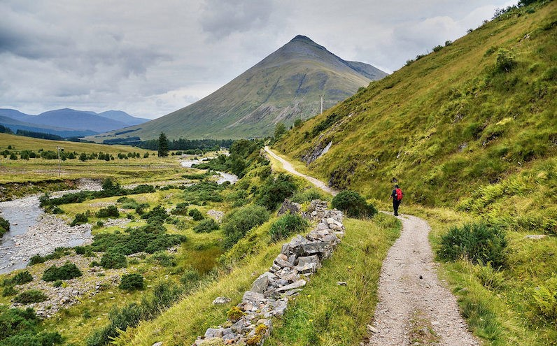

Europe
Europe is one of our most popular backpacking destinations! The continent features beautiful mountain ranges that span multiple
countries and hiking paths that enable you to experience each country's unique landscape.
Epic MT offers three different Europe trip packages: the Alps, the Tatra Mountains, and the West Highland Way.
Read below to find out more!
Alps
Alps
Perhaps the most famous mountain range in Europe, the Alps are the highest and most extensive mountain range system in Europe.
They are approximately 1,200 km and stretch across eight countries: France, Switzerland, Monaco, Italy, Liechtenstein, Austria, Germany, and Slovenia.
As well as their mountains, the Alps are also famous for their stunning lakes including Lake Geneva, Lake Constance, and Lake Como. If you choose our Alps
Backpacking Adventure, which is available from mid-June to September, be prepared for stunning views, lush alpine meadows, beautiful wildflowers, and
plenty of wildlife!
Book A Trip

Tatra Mountains
Tatra Mountains
The High Tatras are the highest mountain range in the Carpathian Mountains, which stretch from Northern Slovakia to Southern Poland.
This 4-day backpacking adventure starts in Tatranska Kotlina village and ends in Strbske pleso. Expect beautiful alpine lakes, cozy mountain
huts, and friendly fellow hikers if you choose this backpacking adventure! Running from mid-June to the end of October, this moderate hike is
perfect for beginners.
Book A Trip

The West Highland Way
The West Highland Way
Stretching 96 miles, the West Highland Way is one of Scotland’s most famous hiking routes starting in Milngavie and running all the way
to Fort William. This famous hiking trail features a large variety of scenery that highlights Scotland’s unique, haunting beauty. From
countryside parks to loch-shores and open moorlands to steep mountains in the Scottish highlands, you will see everything and more on this
unique hike! Our West Highland Way hiking trip takes around 2 weeks, with around 8 days to complete the West Highland Way and the rest used
to climb some of the many mountains along the route including Ben Lomond and Ben Nevis.
Book A Trip